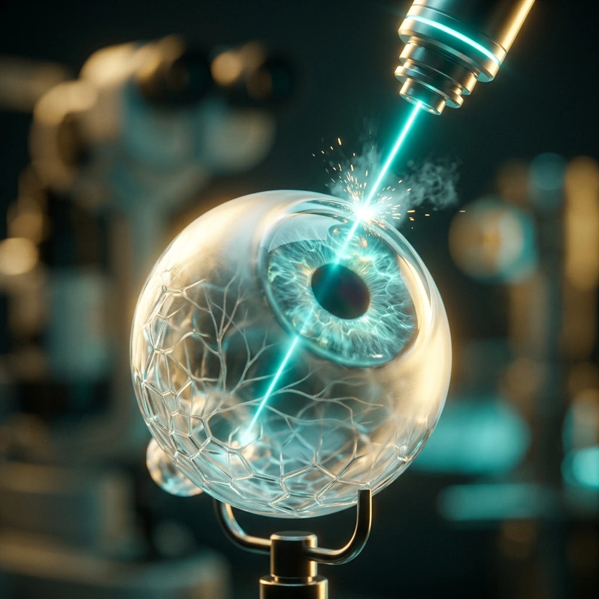

LASIK vs SMILE: Which Laser Eye Surgery Is Right for You?
If you have been wearing glasses or contact lenses for years, you already know how they change your life — and not always for the better. Smudged lenses in the monsoon, contacts that dry out in air-conditioned offices, the daily inconvenience of reaching for your specs the moment you wake up. Laser refractive surgery offers most people a genuine, lasting alternative. But when patients from Meerut and across West UP come to me for a consultation, the first question is almost always the same: "Doctor, should I get LASIK or SMILE?"
The honest answer is: it depends on your cornea, your lifestyle, and the precise measurements we take before any procedure. This article walks you through both technologies so you arrive at your appointment informed and confident.
How Refractive Errors Work
Clear vision depends on light focusing precisely on the retina at the back of the eye. In myopia (near-sightedness), the cornea is too curved or the eyeball is too long, so light focuses in front of the retina — distant objects appear blurry. In hyperopia (far-sightedness), the cornea is too flat and light focuses behind the retina, causing difficulty with near and sometimes distant objects. Astigmatism occurs when the cornea has unequal curvature in different meridians, causing blur and distortion at all distances.
Glasses and contact lenses compensate for these errors optically. Laser surgery corrects them permanently by reshaping the corneal stroma — the middle structural layer of the cornea — so that light lands exactly on the retina without any optical aid. The difference between LASIK and SMILE lies in how that reshaping is achieved.
LASIK: The Established Gold Standard
LASIK — Laser-Assisted In Situ Keratomileusis — has been performed worldwide since the 1990s and remains the most studied elective eye surgery in history. With modern femtosecond technology, it is safer and more precise than ever. Here is exactly what happens during the procedure:
- Flap creation: A femtosecond laser (or, in older systems, a microkeratome blade) creates a thin, hinged flap in the outer cornea — typically 100 to 110 microns thick. This step takes approximately 15 seconds per eye. You will feel mild pressure but no pain.
- Stromal reshaping: The flap is gently lifted and an excimer laser precisely ablates the exposed stromal tissue, flattening the cornea for myopia, steepening it for hyperopia, or smoothing irregular curvature for astigmatism. The computer-guided laser tracks your eye position thousands of times per second and completes the reshaping in under a minute.
- Flap repositioning: The flap is laid back in place over the treated stroma. It adheres naturally within minutes through suction and does not require sutures. The corneal surface seals quickly and most patients notice dramatic improvement within just a few hours of leaving the clinic.
Visual recovery after LASIK is remarkably fast. Roughly 80% of the improvement is apparent within hours of the procedure. Most patients drive themselves to their follow-up appointment the very next morning. Full stability typically occurs within one to three days, with final refraction settling over four to six weeks as the cornea completes its remodelling.
SMILE: The Flapless Advance
SMILE — Small Incision Lenticule Extraction — was approved in India in 2014 and has earned a strong following, particularly among patients who are concerned about dry eye or lead active, contact-sport lifestyles. The defining feature of SMILE is that it uses only a single laser (a femtosecond laser) and creates no flap at all.
- Lenticule creation: The femtosecond laser sculpts a precisely calculated disc of stromal tissue — called a lenticule — within the intact cornea. The shape of the lenticule is determined by your specific refractive error and corneal parameters. This entire step happens beneath the unbroken corneal surface.
- Extraction: The surgeon makes a tiny 2–3 mm arc incision at the corneal edge — compared to the near-complete flap circumference in LASIK — and delicately removes the lenticule through this small opening. Removing the lenticule changes the corneal curvature and corrects the refractive error.
- Healing: Because the anterior corneal layers remain largely undisturbed and fewer corneal nerve fibres are severed, SMILE typically produces less post-operative dry eye. The cornea also retains more of its natural biomechanical strength, which matters particularly for patients with moderately thinner corneas.
Visual recovery with SMILE is slightly slower — most patients achieve functional vision in two to five days rather than within hours. However, the final visual outcome at three months is comparable to LASIK, and for the right candidate the long-term quality of vision is excellent. It is important to note that SMILE is currently approved for myopia and myopic astigmatism; it does not yet treat hyperopia.

LASIK vs SMILE: A Direct Comparison
- Flap creation: LASIK creates a hinged corneal flap; SMILE creates no flap — an important advantage for patients in contact sports, armed forces, or professions where an eye impact is possible.
- Dry eye risk: LASIK carries a higher risk of post-operative dry eye because the flap creation severs more of the corneal nerve fibres responsible for tear secretion signals. SMILE preserves significantly more of these nerves through its smaller incision.
- Biomechanical corneal strength: The flapless SMILE architecture leaves the anterior corneal stroma intact, making the treated cornea structurally stronger post-operatively — a meaningful factor for borderline corneal thickness cases within safe treatment parameters.
- Treatment range: LASIK can correct myopia, hyperopia, and astigmatism. SMILE is currently limited to myopia and myopic astigmatism — patients with hyperopia must choose LASIK or a surface procedure.
- Enhancement (touch-up) procedures: If a refinement is needed years later, LASIK is simpler to enhance — the original flap can be re-lifted. SMILE enhancements require a surface ablation approach (PRK/TransPRK), which is effective but involves a longer recovery.
- Speed of visual recovery: LASIK offers faster initial recovery, with clear vision often the same day. SMILE matches LASIK outcomes at the three-month mark but requires a few more days to reach comfortable functional vision.
Are You a Candidate? What We Assess Before Surgery
Not everyone who wears glasses is a surgical candidate — and that is a sign of responsible refractive surgery practice, not a limitation. At Haripriya Eye Care Centre, every potential LASIK or SMILE patient undergoes a comprehensive pre-operative assessment before any decision is made. The essential criteria we evaluate are:
- Age and prescription stability: At least 18 years old, with no significant prescription change over the past 12 months. Operating on a refraction that is still shifting will give an unstable result — we want to ensure your vision has settled before we commit to surgery.
- Corneal thickness: Measured with Pentacam tomography and pachymetry. After the laser removes tissue, a minimum safe residual stromal bed of 250–300 microns must remain. Corneas that are too thin to meet this threshold safely are excluded from laser procedures.
- Corneal topography and tomography: We screen every patient for keratoconus and forme fruste keratoconus — a subtle corneal weakness that makes laser surgery unsafe and can lead to post-operative ectasia. This screening is non-negotiable and one of the most important steps in our evaluation.
- Dry eye status: Significant pre-existing dry eye disease requires treatment before considering LASIK, and makes SMILE comparatively more attractive. Schirmer's test and tear film break-up time measurement are part of every assessment we perform.
- Prescription range: Myopia up to approximately −10.00 D, astigmatism up to −5.00 D, and hyperopia up to +4.00 D (LASIK only) are within typical treatment ranges — though individual corneal thickness ultimately determines eligibility for each patient.
What to Expect at Haripriya Eye Care Centre
Your journey begins with a detailed pre-operative assessment lasting approximately 90 minutes. This includes a slit-lamp biomicroscopy examination, corneal topography and Pentacam tomography, pachymetry (corneal thickness mapping across the entire cornea), pupil size measurement under dim illumination, and a dedicated dry eye evaluation. Contact lens wearers should stop soft lenses at least three days before the assessment, and rigid gas-permeable lenses at least two weeks before, to allow the cornea to return to its natural shape.
We will review all results with you in detail and give you a clear, honest recommendation — including telling you plainly if laser surgery is not appropriate for your eyes and what alternatives exist. After surgery, a structured post-operative protocol includes lubricating drops, antibiotic drops, and anti-inflammatory eye drops. Protective eye shields are worn at night for the first week. Swimming and eye makeup should be avoided for two weeks, and contact sports for four to six weeks after LASIK (longer after SMILE). Most patients return to desk work and screen use within one to two days.
Why Choose Dr. Jeenu Priya Tyagi
My subspecialty training in cornea and refractive surgery includes fellowship at Sankara Nethralaya Chennai — one of the most respected corneal institutes in Asia — and additional training at New Vision Laser Centre, Vadodara, with exposure to a wide range of complex corneal and refractive cases. This background means I am experienced with challenging corneas, borderline pachymetry situations, and eyes that have undergone prior surgery. For patients in Meerut, Ghaziabad, Hapur, Muzaffarnagar, and the wider West UP and NCR region, Haripriya Eye Care Centre brings subspecialty-level refractive expertise genuinely close to home — without the cost or inconvenience of travelling to Delhi or Gurugram.
Frequently Asked Questions
Is LASIK or SMILE permanent?
Both procedures permanently reshape the cornea to correct your refractive error as it exists at the time of surgery. For most patients, the result is stable for life. However, if your prescription was still changing at the time of surgery, or if the natural lens inside your eye continues to shift with age, a small residual or new prescription may develop over time. Reading glasses for close work typically become necessary in the mid-40s regardless of whether you have had laser surgery — this is presbyopia, a lens change, not a failure of the corneal procedure.
What is the age limit for laser eye surgery?
There is no strict upper age limit, but the ideal window is roughly 18 to 45 years. Below 18, prescriptions are usually still changing. Above 45, the natural lens inside the eye begins to lose flexibility, meaning that even after perfect distance correction with LASIK, reading glasses may soon be required. Special blended-vision LASIK can address presbyopia for selected patients — worth discussing in an individual consultation. Patients in their 50s and 60s are often better served by lens-based procedures such as refractive lens exchange.
Can I get LASIK if I have dry eyes?
Mild dry eye is common and can often be managed with lubricating drops, punctal plugs, or omega-3 supplementation before proceeding with LASIK. Moderate-to-severe dry eye may exclude you from LASIK because the flap creation severs more corneal nerves. In such cases, SMILE — which preserves significantly more nerves — or a surface procedure like PRK/TransPRK may be safer and more comfortable alternatives. We always assess your tear film thoroughly before making any recommendation.
Is the procedure painful?
No. Anaesthetic eye drops are instilled before the procedure and the surgery itself is entirely painless. You may feel mild pressure during the suction phase — approximately 20 to 30 seconds per eye — but there is no cutting sensation or pain. After the drops wear off, some patients notice mild grittiness, light sensitivity, or watering for a few hours, which settles with rest and lubricating drops. The overwhelming majority of patients tell us afterwards that it was far more straightforward than they had anticipated.
Will I still need glasses after LASIK or SMILE?
The goal of both procedures is spectacle independence for distance vision, and the great majority of patients achieve 6/6 (20/20) or better unaided visual acuity. In a small number of cases — particularly very high myopia — a mild residual prescription may remain, and thin glasses for specific tasks such as night driving may be helpful. Enhancement procedures can address this in eligible patients. Reading glasses for near work typically become necessary in the mid-40s regardless of laser surgery, as this reflects natural ageing of the crystalline lens rather than any change in corneal correction.
Find Out If You're a Candidate for LASIK or SMILE
A detailed corneal evaluation at Haripriya Eye Care Centre will tell you which procedure suits your eyes best. Dr. Jeenu Priya Tyagi — trained at Sankara Nethralaya & Aravind. OPD: Mon–Sat, 10 AM – 5 PM.
Book Your Laser Eye Assessment →